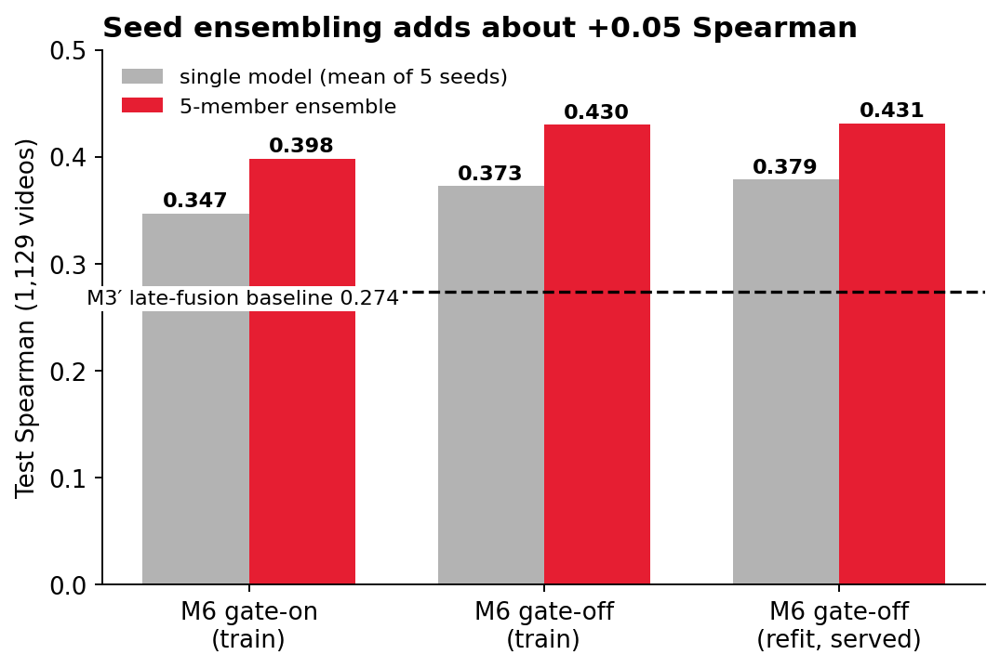
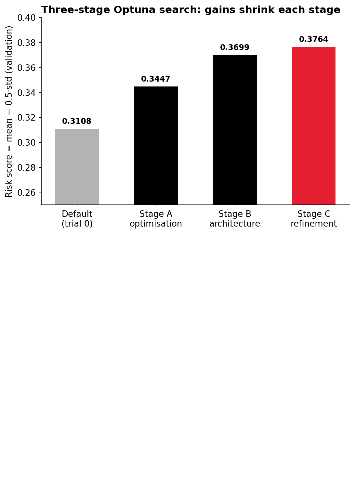
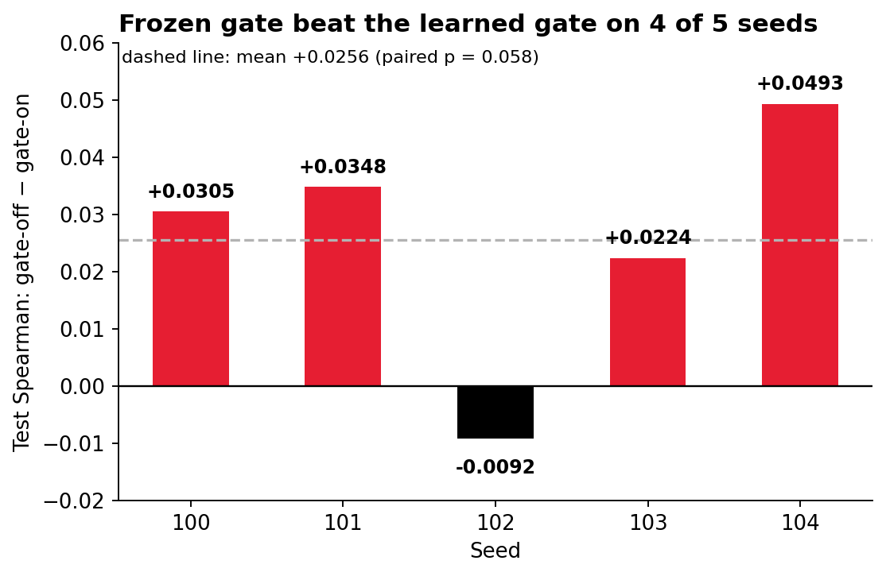
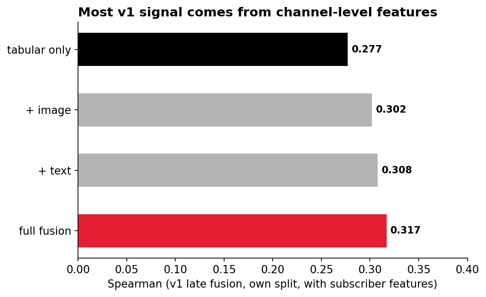

Early fusion beats tuned late fusion.
Temporal split, no subscriber features, 1,129 test videos. In the comparison below, the light bar is the M3′ tuned late-fusion baseline and the dark bar is the M6 early-fusion model (5-seed mean).
The served model: 5 members, refit on train+val
Spearman over M3′ (0.373 vs. 0.274), train-only, gate-off
Label is target > 0; MAE on the log-ratio target is 0.476
Early fusion vs. the baseline
Bars are scaled per metric (the scale is noted under each label), so compare the two bars within a row.
| Model | Seeds | Test Spearman | Test AUC |
|---|---|---|---|
| M3′ tuned late fusion (same-protocol baseline) | 3 | 0.274 ± 0.017 | 0.620 |
| Early fusion, single model (train only) | 5 | 0.373 ± 0.015 | 0.668 |
| Early fusion, single model (refit train+val) | 5 | 0.379 ± 0.011 | 0.666 |
| Early fusion, 5-member ensemble (served) | 5 | 0.431 | 0.690 |
Every refit seed clears the baseline
Under the same protocol, early fusion beats tuned late fusion by 4–6× the seed standard deviation, and averaging five seeds adds another ~0.05 Spearman. Treat the output as a ranking signal for comparing options, not a forecast.
How to read these numbers
What the data does not prove
The baseline has about 73× fewer parameters (40,865 vs. 3,002,608) and a smaller tuning budget. There is one temporal split, and a Spearman on about 1,100 videos carries 0.025–0.03 of sampling noise. No tuned tabular-only baseline exists, so the gain cannot be pinned on the image and text modalities specifically.
A ranking score, not a forecast
Single members drift in absolute level (per-seed MAE 0.48 to 0.56); averaging five brings it to 0.476. The API's views range is a typical-error band, not a guarantee. Gate-off was adopted after seeing its test ablation, so both variants are reported in full.
In operation
14 promoted and 1 rejected in the late-fusion gate log
(experiments/promotions.jsonl).
recent videos (60 days) against 11,162 reference rows. Flagged:
trailing_avg_views (KS 0.12) and
duration_seconds.
roles the test set was opened for. The ledger refuses a second configuration for the same role.
Evidence
Generated from the repo's result files. Click any plot to enlarge.

Seed ensembling adds about +0.05 Spearman

Three-stage Optuna search: gains shrink each stage

Gate ablation: frozen gate won 4 of 5 seeds

v1 modality ablation: most signal is channel-level
In action
Upload a thumbnail, type a title
Enter the channel's recent average views, duration and genre, and get a score with a typical-error band. Rate-limited per IP because every prediction runs CLIP and a 5-model ensemble on a small CPU VM.
Live demo UI: upload, title, score and range